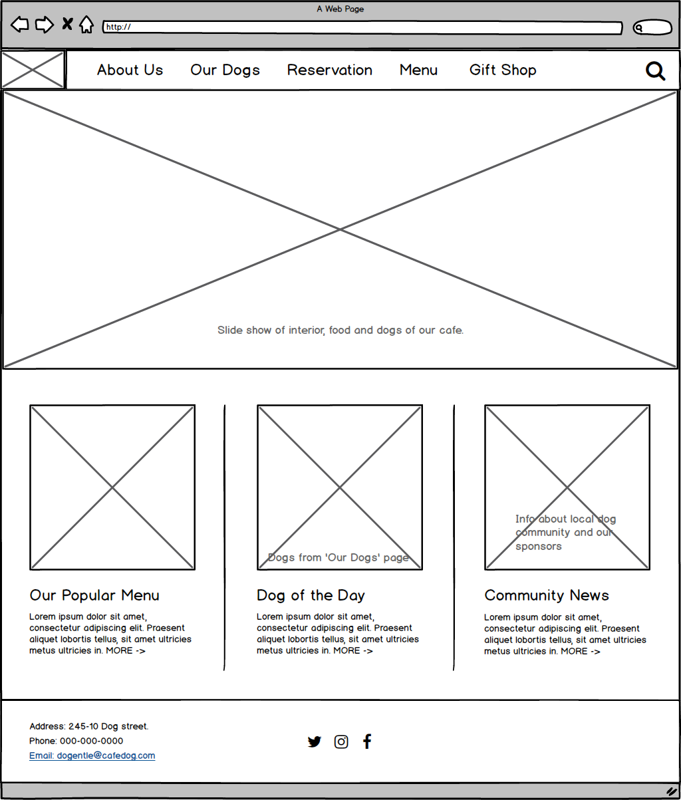
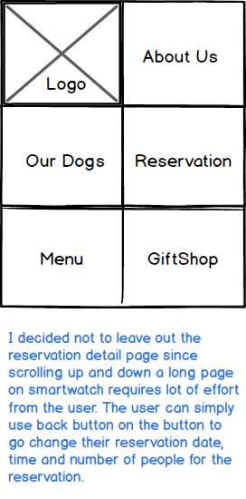

P01 - Dogentle Cafe User-flow
There are five important user-flows for Dogentle Cafe:
- About Us: looking for general information (cafe location, hours, email for reservation, FAQ).
- Reservation: making a reservation to secure a spot in the cafe.
- Our Dogs: information about personality, story and introduction of dogs of our cafe and surprise visits from local social media famous dogs.
- Menu: our price for food and services.
- Gift/Shop: our purchase goods for dogs and customers.
The interactive user-flow mock-up below combines two most important user tasks: making a reservation and information about dogs.
Website User-Flows

Click to view full mock-up.
Game Console User-Flows
 Click to view full mock-up.
Click to view full mock-up.
Smartphone User-Flows
 Click to view full mock-up.
Click to view full mock-up.
Smartwatch User-Flows

Click to view full mock-up.